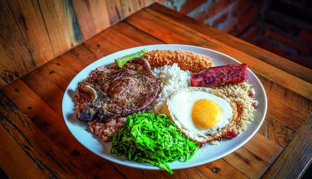

Início
Pratos típicos do Brasil
O Brasil é um país com muitos climas e biomas diferentes, e é claro que isso influenciou na alimentação e, consequentemente, nos pratos típicos do nosso país. As influências de diferentes culturas (como a indígena, a africana e a portuguesa) também tiveram grande contribuição no molde da culinária brasileira.
Essa diversidade fez com que a maior parte dos pratos típicos fossem feitos com ingredientes encontrados nas proximidades, como o jambú (utilizado no pato no tucupi), que é uma raiz presente na região norte do país, onde se originou tal receita. Outra importante característica da gastronomia brasileira é que grande parte dos seus pratos típicos foram criados para evitar o desperdício ou são adaptações de comidas de outros países, utilizando ingredientes regionais.
A base alimentar brasileira consiste em grande parte nos derivados da mandioca e na mistura de arroz com feijão, mas também inclui diversos outros ingredientes e misturas.
Se você tem vontade de experimentar (e cozinhar) algum prato brasileiro, na página Receitas estão presentes 5 receitas diferentes, cada uma típica de uma região do Brasil, especialmente selecionadas para você! Elas incluem a feijoada, o baião de dois, o pato no tucupi e mais! Confira!
